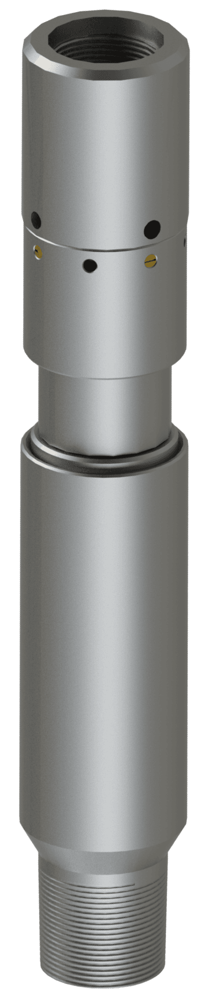

PL-H/MRT
Hydraulic-mechanical disconnector

The hydraulic-mechanical disconnector is designed for running and cementing of a casing liner. During well casing cementing, it maintains the liner in a straight position during the wait-on-cement period, thereby preventing unloading of the liner weight onto the cement sheath.
- Liner
- 3 1/2″ – 7 5/8″
- Sizes
- 9
- Category
- Casing equipment
Design advantages
- Running and setting of liners in difficult geological conditions;
- Availability of a backup option for opening the flushing holes;
- Design allows the liner string to be rotated during running;
- Anti-rotational design of the closing plug and reliable fixation;
- Capability to run heavy liner strings;
- Wide range of operating pressures;
- Reliability and ease of use.
About the tool
The PL-H/MRT disconnector is used in both vertical and directional wells and can be assembled with various types of technological equipment. The disconnector can be equipped with a keying mechanism that allows the liner string to be rotated during the running process.
The PL-H/MRT disconnector is activated after completion of all required technological operations by applying the pressure required to open the flushing holes, followed by mechanical disconnection of the liner string from the drill pipe.
A stop collar and a drill pipe plug or ball are supplied with the disconnector.
Sizes
Request PL-H/MRT
Tell us the casing, the depth and the conditions, and we will come back with a selection.
Contact us